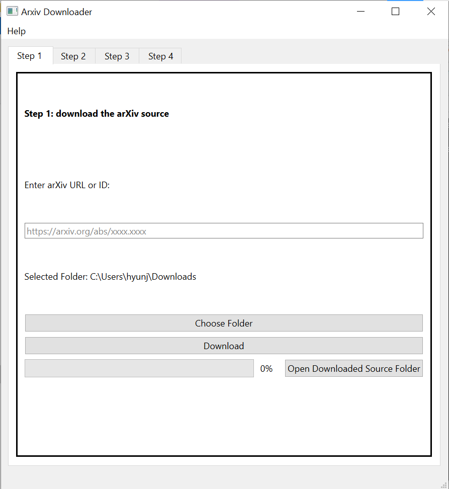

trouver
Mathematicians constantly need to learn and read about concepts with which they are unfamiliar. Keeping mathematical notes in an Obsidian.md vault can help with this learning process as Obsidian.md makes it easy to edit notes, link notes to one another, organize notes, read notes, and access notes.
This library currently includes functionalities (see also the below) to
- Parse LaTeX documents (e.g. those available on
arxiv.org) and divide them into reasonably lengthed parts/notes/excerpts as.mdfiles, especially for viewing and editing onObsidian.md. - Use a machine learning model to categorize the type of text each excerpt is (e.g. introducing definitions/notations, presenting a concept, presenting a proof).
- Use a machine learning model to identify definitions and notations introduced in each excerpt.
- Use machine learning models to “name” definitions and notations introducd in each excerpt.
- Create accompanying notes for each notation as more
.mdfiles. - Use a machine learning model to summarize what these notations denote in the created accompanying notes.
As some of these functionalities use machine learning models, they ultimately cannot run perfectly. Nevertheless, some of these models, particularly those described in 2 and 3, perform well enough that these functionalities are quite useful as tools to help reading mathematical papers (when used in conjunction with Obsidian.md).
Moreover, the results of the machine learning models are recorded in the notes/.md files. One can very well correct these recorded results by manually editing the affected .md files with any file editor.
As of Version 1.0.1, trouver has a graphical user interface wrapping some (but not all) of its functionalities.

Disclaimer
At the time of this writing (12/23/2024), there is only one author/contributor of this library. Nevertheless, the author often refers to himself as the author, the authors, or the author/authors in writing this library. Moreover, the author often uses the editorial we in writing this library.
Use this library at your own risk as using this library can write or modify files in your computer and as the documentation of components of this library may be inaccurate, outdated, or not-well-maintained. Moreover, future components of this library may use external API’s (including but possibly not limited to OpenAI’s API) that may not be free to use. By using this library, you agree that the author/authors of this library is/are not responsible for any damages or losses, including but not limited to data or monetary losses, from this library and related components.
This library is still somewhere in-between prototype and alpha. Moreover, the library itself may be unstable and subject to abrupt changes.
The author/authors of this library is/are also not affiliated with Obsidian.md, fast.ai, Hugging Face, and arXiv.
Install
See also how_to.install_trouver
We recommend having at least 5GB of free disk space to install trouver and related components (mostly the ML models).
pip install trouverYou may also have to manually install other libraries which are required by the fast.ai and/or Hugging Face libraries.
We recommend installing Obsidian.md to view, edit, and modify mathematical notes created by or which interact with trouver.
See how_to.install_trouver for more details on installation.
Warning At the time of this writing,
trouverhas not been tested on MacOS extensively. We have also found that running the latest Python versions in Jupyter notebooks on modern MacOS machines (e.g. those using the M1 processor and in particular the arm64 architecture) lead to some issues. cf. stackexchange discussions such as
Descriptions of functionalities
We describe some of trouver’s ML functionalities. Sample code is available in tutorial.walkthrough. See below for some rationale for these functionalities.
The predictions in the examples below are just for illustration; actual predictions by the ML models may differ — what constitutes as “ideal predictions” is ultimately subjective and users’ opinions on how the ML models should actually predict will vary. All of the ML models are hosted on the page for the user hyunjongkimmath on huggingface.
TODO: mention the functions for each of the functionalities
1. Predict types of excerpts of mathematical text.
The model hyunjongkimmath/information_note_type predicts what type a given excerpt of text is (using Markdown tags). See markdown.obsidian.personal.machine_learning.information_note_types for more details.
For example, the model should predict that the following excerpt is a #_meta/definition and a #_meta/notation.
Let \((X, d)\) be a metric space and \(x \in X\).
Definition 1.3.1: The open ball centered at \(x\) with radius \(r > 0\) is defined as:
\[B(x, r) = \{y \in X : d(x, y) < r\}\]
Definition 1.3.2: The closed ball centered at \(x\) with radius \(r \geq 0\) is defined as:
\[\overline{B}(x, r) = \{y \in X : d(x, y) \leq r\}\]
For another example, the model should predict that the following excerpt is a #_meta/concept and a #_meta/proof.
Theorem 3.2.1: Let \(A\) be an \(n \times n\) matrix. If \(A\) is invertible, then its columns are linearly independent.
Proof: Let \(c_1, c_2, ..., c_n\) be the columns of \(A\). Suppose
\[a_1c_1 + a_2c_2 + ... + a_nc_n = 0\]
for some scalars \(a_1, a_2, ..., a_n\). This is equivalent to
\[A\mathbf{x} = \mathbf{0}\]
where \(\mathbf{x} = (a_1, a_2, ..., a_n)^T\). Since \(A\) is invertible,
\[\mathbf{x} = A^{-1}\mathbf{0} = \mathbf{0}\]
Thus, \(a_1 = a_2 = ... = a_n = 0\), proving that the columns are linearly independent.
For yet another example, the model should predict that the following excerpt is a #_meta/narrative.
In this section, we explore the fundamental concepts of eigenvalues and eigenvectors. These powerful tools allow us to:
- Understand the action of a linear transformation on specific vectors
- Diagonalize matrices, simplifying many computations
- Analyze dynamical systems and their long-term behavior
We begin by defining eigenvalues and eigenvectors, then proceed to develop methods for finding them. The characteristic equation will play a crucial role in our analysis. Finally, we’ll examine some applications, including the diagonalization of matrices and solving systems of differential equations.
The following are some tags that the model is adept at predicting:
#_meta/definitionlabels a note that introduces a definition.#_meta/notationlabels a note that introduces a notation.#_meta/conceptlabels a note that contains a general concept, e.g. by virtue of stating a theorem/proposiiton/lemma/corollary.#_meta/prooflabels a note that contains a proof.#_meta/narrativelabels a note that contains narrative - explainations of the material that is presented. Narratives most usually occur at the start/end of a chapter/section of a book/text/paper and in-between definitions/theorems/etc.#_meta/exerciselabels a note that contains an exercise problem.#_meta/remarklabels a note that contains a remark.#_meta/examplelabels a note that contains an example.#_meta/contextlabels a note that contains “contextual information”, i.e. information that other notes might depend on (e.g. “in this section, \(k\) is an algebraically closed field”, “For the rest of this section, we assume that \(X\) is a pointed topological space”).
2. Mark definitions and notations introduced in an excerpt of mathematical text.
The model hyunjongkimmath/def_and_notat_token_classification_model attempts to find where exactly definitions and notations are introduced in a given excerpt of text. See markdown.obsidian.personal.machine_learning.tokenize.def_and_notat_token_classification
For example, take the following excerpt.
Let \((X, d)\) be a metric space and \(x \in X\).
Definition 1.3.1: The open ball centered at \(x\) with radius \(r > 0\) is defined as:
\[B(x, r) = \{y \in X : d(x, y) < r\}\]
We denote this open ball as \(B(x, r)\).
Definition 1.3.2: The closed ball centered at \(x\) with radius \(r \geq 0\) is defined as:
\[\overline{B}(x, r) = \{y \in X : d(x, y) \leq r\}\]
We use the notation \(\overline{B}(x, r)\) for closed balls.
The model should predict (and functions in the module markdown.obsidian.personal.machine_learning.tokenize.def_and_notat_token_classification should mark) the following definitions and notations as introduced in the text:
Let \((X, d)\) be a metric space and \(x \in X\).
Definition 1.3.1: The open ball centered at \(x\) with radius \(r > 0\) is defined as:
\[B(x, r) = \{y \in X : d(x, y) < r\}.\]
Definition 1.3.2: The closed ball centered at \(x\) with radius \(r \geq 0\) is defined as:
\[\overline{B}(x, r) = \{y \in X : d(x, y) \leq r\}.\]
3. Name definitions and notations introduced in an excerpt of mathematical text.
The models hyunjongkimmath/definition_naming_model and hyunjongkimmath/notation_naming_model attempt to “name” definitions and notations (marked either manually or with the hyunjongkimmath/def_and_notat_token_classification_model discussed above).
In the example above, the hyunjongkimmath/definition_naming_model model ideally would name the definition encapsulated by the marked phrases
- open ball centered at \(x\) with radius \(r > 0\) and
- closed ball centered at \(x\) with radius \(r \geq 0\)
as (something along the lines of)
- “Open ball centered at a point of a metric space with radius \(r\)” and
- “Closed ball centered at a point of a metric space with radius \(r\)”
respectively.
Moreover, the hyunjongkimmath/notation_naming_model ideally would name the notation encapsulated by the marked LaTeX math mode texts
- \[B(x, r) = \{y \in X : d(x, y) < r\}\]
- \[\overline{B}(x, r) = \{y \in X : d(x, y) \leq r\}\]
as
- \(B(x, r)\) and
- \(\overline{B}(x, r)\)
respectively — the aim of the notation-naming process is to only extract the actual notation itself, not other parts of the LaTeX math mode texts that are not part of the notation.
There may sometimes be more than one “good” way to name a definition/notation and a given marked phrase may actually encapsulate more than one definition/notation. In the above example, one might argue that the marked phrases
- open ball centered at \(x\) with radius \(r > 0\) and
- closed ball centered at \(x\) with radius \(r \geq 0\)
encapsulate not only the notions of “open ball” and “closed ball” (centered at a point and with radius \(r\)), but also the notions of “the center of an open/closed ball” or “the radius of an open/closed ball”.
4. Summarize what a notation denotes as introduced in an excerpt of mathematical text.
The model hyunjongkimmath/notation_summarizations_model attempts to summarize what a notation introduced in a excerpt (marked either manually or with the hyunjongkimmath/def_and_notat_token_classification_model discussed above and named with the hyunjongkimmath/notation_naming_model discussed above) is supposed to denote.
In the above examples, the marked (and named) notations of \(B(x,r)\) and \(\overline{B}(x,r)\) may be ideally summarized as follows:
\(B(x,r)\) denotes the open ball centered at \(x\) with radius \(r\) where \(x\) is a point of a metric space \(X\) and \(r > 0\). It is defined as \[B(x, r) = \{y \in X : d(x, y) < r\}\]
\(\overline{B}(x,r)\) denotes the closed ball centered at \(x\) with radius \(r\) where \(x\) is a point of a metric space \(X\) and \(r > 0\). It is defined as \[\overline{B}(x, r) = \{y \in X : d(x, y) \leq r\}\]
Ideally, such a generated notation should contain the following information (as available):
- The name/intuitive description of the notion denoted by the notation (in the above examples, “open ball” and “closed ball”).
- The way the notion is defined/constructed (in the above examples, \(B(x, r) = \{y \in X : d(x, y) < r\}\), etc.)
- Other helpful information about the notation as introduced in the text.
Rationale for the functionalities and intended use
The sheer amount and interconnectedness of definitions and notations that one has to understand (or at least be aware of) make it difficult to learn mathemamatics, especially at the graduate or research levels (and beyond). The above functionalities aim to make learning mathematics more tractable by making it easier to locate (and remind oneself of) definitions and notations introduced in mathematical text.
Difficulties in reading mathematical papers
For example, take the following (very much fake) mathematical theorem from Hyun Jong Kim’s talk at the AMS Student Chapter Seminar1 at the University of Wisconsin-Madison during the Spring 2024 semester:
Theorem.
Given a smooth, flavorful, gastroidal toroid \(\mathscr{T}_\mathscr{G}\) of rank \(n\), we have a natural isomorphism \[H_{\text{suc}}^i(\mathscr{T}_\mathscr{G}) \cong H_{\text{Betti}} ( |\mathscr{T}_\mathscr{G}|(\mathbb{C}), \mathbb{Q}(\mathscr{T}_\mathscr{G}))^{3n-i}.\]
Even in this short (fake) theorem, a first time reader may not understand a multitude of defintions/notations:
- Gastroidal toroid
- Smooth gastroidal toroid
- flavorful gastroidal toroid
- rank of a gastroidal toroid
- \(H_{\text{suc}}^i\)
- \(|\mathscr{T}_\mathscr{G}|\)
- \(|\mathscr{T}_\mathscr{G}|(\mathbb{C})\)
- \(\mathbb{Q}(\mathscr{T}_\mathscr{G})\).
Hypothetically, say that the reader finds some definitions/notations (which may very well take several minutes):
A gastroidal toroid is a toroid constructed as a fried dough and equipped with a sucrose structure. The space \(|\mathscr{T}_\mathscr{G}|\) of a gastroidal toroid \(\mathscr{T}_\mathscr{G}\) is the underlying topological space structure of the friend dough. We say that a gastroidal toroid is flavorful is \(\lim_{n \to \infty} \operatorname{swt}_n(\mathscr{T}_\mathscr{G}) \geq 1\)
However, this excerpt requires the reader to understand more definitions and notations:
- a fried dough
- a sucrose structure
- \(\operatorname{swt}_n\)
In practice, as one sets out to learn about numerous definitions and notations, say in a given mathematical paper, one can often forget details and thus need to spend much time to re-find such definitions and notations.
A workaround using Obsidian.md
The functionalities of trouver, used in conjunction with Obsidian.md, can help work around these difficulties to reduce the amount of time and effort needed to re-find and re-learn these definitions and notations. trouver can divide a LaTeX document into not-too-long notes (see the divide_latex_text function in latex.divide and the setup_reference_from_latex_parts function in latex.convert) for an Obsidian.md vault.
Some of Obsidian.md strengths include the ease with which links/embeddings between notes can be made and the ease with which notes can be searched and opened. In essence, one can use the aforementioned functionalities to automatically identify definitions and notations introduced throughout the mathematical text, create new notes dedicated to each notation (see the make_notation_notes_from_HTML_tags function in markdown.obsidian.personal.notation), and write summaries of what the notations denote.
These notation notes can then be linked/embedded into other notes as needed, thereby making it much easier to view what a notation denotes.
TODO: include example image
GUI
trouver now has a prototype GUI for some of the aforementioned funcionalities.
TODO: include link to GUI download
How to use
How the examples/tests are structured
Many of the functions and methods in this library are accompanied by examples demonstrating how one might use them.
These examples are usually also tests of the functions/methods; the developer of this library can use nbdev’s nbdev_test command-line command to automatically run these tests23. Moreover, there is a GitHub workflow in the repository for this library (see the .github/workflows/test.yaml) which automatically runs these examples/tests on GitHub Actions when changes to are committed to the GitHub repository4.
These examples may use a combination of the following:
- Mock patching via Python’s
unittest.mocklibrary. - The
fastcore.testmodule as assertion statements. - example/test files in the
nbs/_testsfolder in the repository5.- The
_test_directory()function in thehelpermodule obtains this folder. - Many of these examples also use the
tempfile.TemporaryDirectoryclass along with theshutil.copytreeto create a Python context manager of a temporary directory with contents copied from thenbs/_testsfolder. The temporary directory is automatically deleted once the context manager ends. We do this to run tests/examples which modify files/folders without modifying the files/folders in thenbs/_testsdirectory themselves.- For example, the code
first creates a temporary directory startingwith tempfile.TemporaryDirectory(prefix='temp_dir', dir=os.getcwd()) as temp_dir: temp_vault = Path(temp_dir) / 'test_vault_1' shutil.copytree(_test_directory() / 'test_vault_1', temp_vault) # run the rest of the example here # Uncomment the below lines of code to view the end-results of the example; # os.startfile(os.getcwd()) # os.input() # this line pauses the process until the user makes an input so the deletion of the temporary directory is delayed.temp_dirin the current working directory and copies into this temporary directory the contents oftest_vault_1in thenbs/_testsfolder. One the example/test has finished running, the temporary directory is removed whether or not the test succeeds.
- The
Miscellaneous
This repository is still in its preliminary stages and much of the code and documentation may be faulty or not well formatted. The author greatly appreciates reports of these issues, notifications of typos, and suggestions on edits; please feel free to report them on the Issues section of the GitHub repository for this library. The author of this repository, who is primarily a mathematician (a postdoctoral associate at the time of this writing), does not guarantee quick responses or resolutions to such issues, but will do his best to address them.
For developers
This repository is based on the nbdev template. As such, code for the packages as well as the documentation for the repository are written in jupyter notebooks (the .ipynb files in the nbs folder) and the Python modules are auto-generated via the command-line command nbdev_export (or nbdev_prepare, which among other things runs nbdev_export.).
Troubleshooting
- In the
nbs/_testsfolder, make sure that the folders that you want to test are not empty; since git does not track empty folders, empty folders will not be pushed in GitHub and the tests in GitHub Actions may yield different results than in a local computer.
Copyright
Copyright © 2023 onward Hyun Jong Kim. Licensed under the Apache License, Version 2.0 (the “License”); you may not use this project’s files except in compliance with the License. A copy of the License is provided in the LICENSE file in this repository.
Special Thanks
The author of trouver thanks Sun Woo Park for agreeing to allow their coauthored paper, Global \(\mathbb{A}^1\)-degrees covering maps between modular curves, along with some of Park’s expository writings, to be used in examples in this library. The author of trouver further thanks Sun Woo Park for his help in testing trouver on a MacOS computer and for reviewing the tutorial.walkthrough page.
Components of trouver use arXiv.org’s API. As such, we include the following thanks:
Thank you to arXiv for use of its open access interoperability.
trouver was built using nbdev as a template.
Release notes
See release_notes.
Footnotes
Colloquially referred to as the “Donut seminar”, as the organizers purchase donuts with the funds provided by the AMS for the speakers and the audience to eat. The fake theorem/definition below are jokes about donuts.↩︎
cf. nbdev’s End-To-End Walkthrough to see how to use
nbdev_test↩︎There are also tests which are hidden from the documentation website; one can find these tests in the jupyter notebook files in the
nbsfolder in the repository for this library as notebook cells marked with the#| hideflag, cf. nbdev’s End-to-End Walkthrough to see what the#| hideflag does.↩︎The
.github/workflows/test.yamlGitHub workflow file is set up in such a way that that allows GitHub Actions to access/use the contents of thenbs/_testsdirectory upon running the tests/examples.↩︎The
.github/workflows/test.yamlGitHub workflow file is set up in such a way that that allows GitHub Actions to access/use the contents of thenbs/_testsdirectory upon running the tests/examples.↩︎